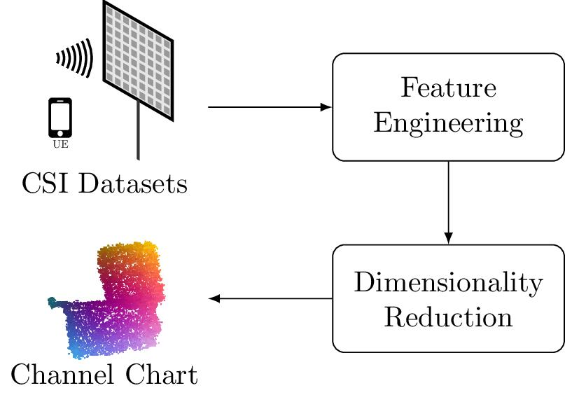
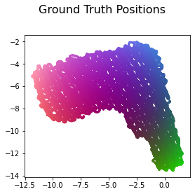
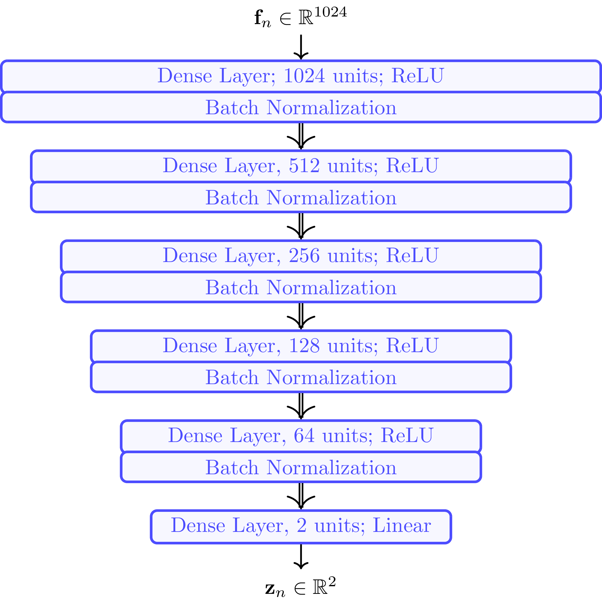
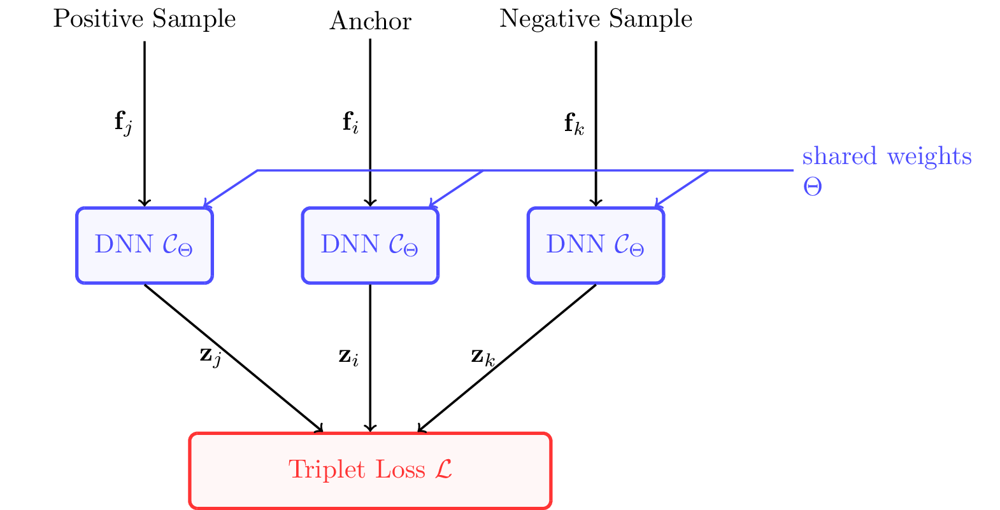
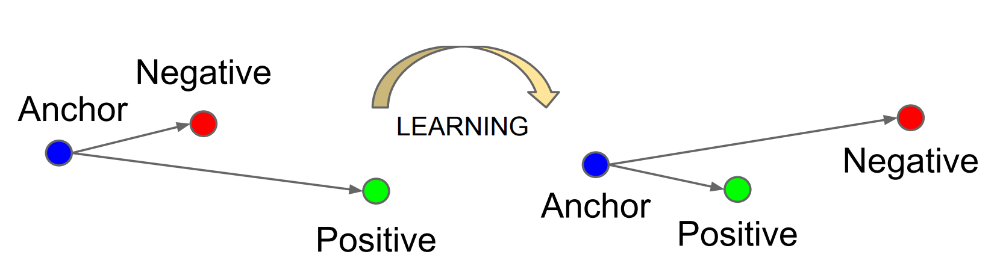
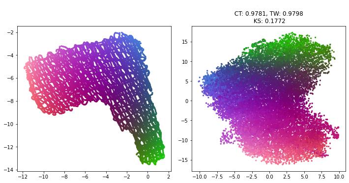

Thanks to global navigation satellite systems, your phone can tell you your location and reliably guide you to your destiation. Well, except if you are indoors or in an urban canyon of course, then you are on your own. And, sure it will drain your battery a bit faster. It will also take a few moments until your phone has picked up signals from sufficiently many satellites to localize you. Is this really the best technology can do?
We believe that, by leveraging future massive MIMO deployments in 5G and beyond in a process known as "Channel Charting", there is still room for enhancing geolocation services. Massive MIMO is crucial technology for improving the spectral efficiency of wireless telecommunication systems through spatial multiplexing and will likely be deployed in the form of 5G base stations. With massive MIMO, the base station collects so-called channel state information (CSI) at every receiver antenna, from which the base station can infer properties like angles of arrival, reflections and propagation delays. While this is necessary for ensuring the functionality of massive MIMO, CSI does not necessarily have to be stored and analyzed. But, what if we did just that, can we localize end users at the base station just from CSI? Well, sure! It has been shown that CSI-based user localization is possible (we have a tutorial on that!), at least with supervised machine learning methods such as CSI fingerprinting. These approaches, however, require "ground truth" position labels for the transmitter position, which are usually not available. Channel Charting, on the other hand, is a self-supervised learning technique which aims to create a virtual map of high-dimensional CSI. Therefore, channel charting is not dependent on the availability of position labels, which is a huge advantage over fingerprinting.

While faster and more reliable personal navigation will be the most visible advantage for end users, asset tracking and radio access network (RAN) management tasks will benefit even more significantly: Asset tracking, because embedding GNSS (e.g., GPS) receivers into trackers is often infeasible: A GNSS receiver is more expensive than just a wide-area radio modem, it doesn't work inside warehouses and needs a lot of energy and hence does not last on a battery for long (especially if the device is usually in sleep mode, and needs up to a minute to obtain an accurate position estimate after waking up before going back to sleep). The mobile network itself will also benefit significantly from the availability of location information at the base station. For example, knowing location and velocity of a user will allow the base station to predict the wireless channel into the future. In addition, the network will be able to plan handovers between base stations ahead of time ensuring seamless connectivity and prevent pilot contamination.
Considering a massive MIMO system, CSI is collected at the BS for different UE positions \(\mathbf{x}_n \in \mathbb{R}^D\) at each time instant \(n=1,\dots,N\). The CSI at a particular time instant can be expressed as \(\mathbf h_n \in \mathbb C^M\), with \(M=B\cdot W \gg D\) for \(B = 32\) antennas at the BS and \(W = 1024\) OFDM subcarriers. The dataset is made up of data points that are 3-tuples of channel coefficients \(\mathbf{h}_{n}\), UE positions \(\mathbf x_n\) and timestamps \(t_n\): \[ \text{Dataset:} ~ \left\{ (\mathbf{h}_{n}, \mathbf x_n, t_n) \right\}_{n = 1, \ldots, N} \]
In particular, we use the dichasus-cf0x dataset for this tutorial.
DICHASUS uses a reference transmitter-based system architecture, which entails that measured phases may exhibit constant offsets caused by the reference transmitter channel.
Luckily, we calculated these offsets for each DICHASUS dataset so they are available for download.
The datasets themselves are provided in the TFRecords file format, which makes loading them with TensorFlow particularly simple.
First, we download the three robot round trips dichasus-cf02.tfrecords, dichasus-cf03.tfrecords and dichasus-cf04.tfrecords and their phase offsets:
!mkdir dichasus
!wget --content-disposition https://darus.uni-stuttgart.de/api/access/datafile/:persistentId?persistentId=doi:10.18419/darus-2854/8 -P dichasus # dichasus-cf02
!wget --content-disposition https://darus.uni-stuttgart.de/api/access/datafile/:persistentId?persistentId=doi:10.18419/darus-2854/9 -P dichasus # dichasus-cf03
!wget --content-disposition https://darus.uni-stuttgart.de/api/access/datafile/:persistentId?persistentId=doi:10.18419/darus-2854/10 -P dichasus # dichasus-cf04
!wget https://dichasus.inue.uni-stuttgart.de/datasets/data/dichasus-cf0x/reftx-offsets-dichasus-cf02.json -P dichasus
!wget https://dichasus.inue.uni-stuttgart.de/datasets/data/dichasus-cf0x/reftx-offsets-dichasus-cf03.json -P dichasus
!wget https://dichasus.inue.uni-stuttgart.de/datasets/data/dichasus-cf0x/reftx-offsets-dichasus-cf04.json -P dichasus
Next, we load the TFRecords files with TensorFlow and apply the offset compensation to the CSI as described in Offset Compensation.
Furthermore, we apply a first pre-processing step by averaging each CSI vector over eight subcarriers in the center of the considered bandwidth as
\[
\mathbf{\overline{h}}=\frac{1}{8}\sum_{w=508}^{515}\mathbf{h}_{b,w} \in \mathbb{C}^{32}
\]
In the following, we use three complete robot round trips as training set and one round trip as test set:
import numpy as np
import pandas as pd
import matplotlib.pyplot as plt
import numpy.linalg as LA
import json
import tensorflow as tf
from tensorflow import keras
from tensorflow.keras import layers
from sklearn.metrics import pairwise_distances
from sklearn.neighbors import NearestNeighbors
from sklearn import manifold
from sklearn.utils import shuffle
training_path=["../DATA/euchner/dichasus/dichasus-cf0x/tfrecords/dichasus-cf02.tfrecords","../DATA/euchner/dichasus/dichasus-cf0x/tfrecords/dichasus-cf03.tfrecords","../DATA/euchner/dichasus/dichasus-cf0x/tfrecords/dichasus-cf04.tfrecords"]
training_offsets=["offset_estimates/cf0x/cf02.json","offset_estimates/cf0x/cf03.json","offset_estimates/cf0x/cf04.json"]
records_n=83985
test_path=["../DATA/euchner/dichasus/dichasus-cf0x/tfrecords/dichasus-cf07.tfrecords"]
test_offsets=["offset_estimates/cf0x/cf07.json"]
records_n_test=59137
def return_dataset(path,offset_path):
def record_parse_function(proto):
record = tf.io.parse_single_example(proto, {
"csi": tf.io.FixedLenFeature([], tf.string, default_value = ''),
"pos-tachy": tf.io.FixedLenFeature([], tf.string, default_value = ''),
"time": tf.io.FixedLenFeature([], tf.float32, default_value = 0),
})
csi = tf.ensure_shape(tf.io.parse_tensor(record["csi"], out_type = tf.float32), (32, 1024, 2))
csi = tf.complex(csi[:,:,0], csi[:,:,1])
csi = tf.signal.fftshift(csi, axes = 1)
offsets = None
with open(offset_path, "r") as offsetfile:
offsets = json.load(offsetfile)
sto_offset = tf.tensordot(tf.constant(offsets["sto"]), 2 * np.pi * tf.range(tf.shape(csi)[1], dtype = np.float32) / tf.cast(tf.shape(csi)[1], np.float32), axes = 0)
cpo_offset = tf.tensordot(tf.constant(offsets["cpo"]), tf.ones(tf.shape(csi)[1], dtype = np.float32), axes = 0)
csi = tf.multiply(csi, tf.exp(tf.complex(0.0, sto_offset + cpo_offset)))
csi = csi = tf.reduce_mean(csi[:,508:516],axis=1)
position = tf.ensure_shape(tf.io.parse_tensor(record["pos-tachy"], out_type = tf.float64), (3))
time = tf.ensure_shape(record["time"], ())
return csi, position[:2], time
return tf.data.TFRecordDataset(path).map(record_parse_function)
training_set = return_dataset(training_path[0],training_offsets[0])
if len(training_path) > 1:
for i in range(1,len(training_path)):
training_set=training_set.concatenate(return_dataset(training_path[i],training_offsets[i]))
test_set = return_dataset(test_path[0],test_offsets[0])
if len(test_path) > 1:
for i in range(1,len(test_path)):
test_set=test_set.concatenate(return_dataset(test_path[i],test_offsets[i]))Next, we load the training set as separate NumPy arrays for the features, the ground truth positions and the timestamps. To reduce the massive amount of data points, we load only every third data point in our NumPy arrays. This is possible since the samples are drawn with a high density over the considered area.
n=4
records_n_new=int((records_n+n-1)/n)
csi_train=np.zeros((records_n_new, 32), np.complex64)
positions_train=np.zeros((records_n_new, 2))
time=np.zeros(records_n_new)
for i, data in enumerate(training_set.take(records_n)):
if i%n==0:
csi_train[int(i/n)]=data[0]
positions_train[int(i/n)]=data[1]
time[int(i/n)]=data[2]
positions_train = positions_train[np.argsort(time)]
csi_train = csi_train[np.argsort(time)]
time = time[np.argsort(time)]Now we can plot the ground truth positions of the training set. To this end, we wrote a plot-function which colorizes the area of the ground truth positions unambiguously. Later, we can reuse this function to plot the channel chart with the same colorization.
def plot_data(reference_data, data, title=None, metrics=None, show_ref=False, axis=True):
center_point = np.zeros(2,dtype=np.float32)
center_point[0]=0.5*(np.min(reference_data[:,0],axis=0)+np.max(reference_data[:,0],axis=0))
center_point[1]=0.5*(np.min(reference_data[:,1],axis=0)+np.max(reference_data[:,1],axis=0))
def NormalizeData(in_data):
return (in_data - np.min(in_data)) / (np.max(in_data) - np.min(in_data))
rgb_values=np.zeros((reference_data.shape[0],3))
rgb_values[:,0]=1-0.9*NormalizeData(reference_data[:,0])
rgb_values[:,1]=0.8*NormalizeData(np.square(np.linalg.norm(reference_data-center_point, axis=1)))
rgb_values[:,2]=0.9*NormalizeData(reference_data[:,1])
if show_ref is True:
fig, axes = plt.subplots(1,2,figsize=(10,5))
fig.tight_layout(rect=[0, 0.03, 1, 0.97])
axes[0].set_title("Ground Truth Positions")
axes[0].scatter(reference_data[:,0],reference_data[:,1],c=rgb_values, s=5)
if metrics is not None:
axes[1].set_title("Triplet NN \n CT: {}, TW: {} \n KS: {}".format(*metrics))
axes[1].scatter(data[:,0],data[:,1],c=rgb_values, s=5)
else:
fig, axes = plt.subplots(figsize=(4,4))
if title is not None:
fig.suptitle(title, fontsize=16)
fig.tight_layout(rect=[0, 0.03, 1, 0.97])
plt.subplots_adjust(hspace=0.3)
plt.axis(axis)
if metrics is not None:
axes.set_title("CT: {}, TW: {} \n KS: {}".format(*metrics))
axes.scatter(data[:,0],data[:,1],c=rgb_values, s=5)
plot_data(positions_train,positions_train,title="Ground Truth Positions")
The main reason to perform feature engineering is to reduce the dimensionality of the CSI while keeping the large-scale fading characteristics of the channel. Averaging over a certain subcarrier area has aleady been performed as a first step previously. We further apply the method of [Studer] by computing the scaled raw second moment (R2M) of \(\mathbf{\overline{h}}\). By only considering its real part, we obtain the feature vector \(\mathbf{f}_n \in \mathbb R^{M'}\) with \(M' = 1024\). The channel coefficients \(\mathbf h_n \in \mathbb C^M\) are then replaced by the feature vectors \(\mathbf f_n \in \mathbb R^{M'}\) so the resulting dataset is built as \[ \text{Dataset:} ~ \left\{ (\mathbf{f}_{n}, \mathbf x_n, t_n) \right\}_{n = 1, \ldots, N} \]
beta=1+1/16
features_train=np.zeros((csi_train.shape[0],32,32),dtype=np.float32)
for i in range(csi_train.shape[0]):
features_train[i]=np.real(((np.power(32,beta-1))/np.power(LA.norm((csi_train[i]*np.conj(np.expand_dims(csi_train[i],axis=1))),'fro'),beta))*(csi_train[i]*np.conj(np.expand_dims(csi_train[i],axis=1))))As we have loaded and applied feature engineering to our CSI dataset, we are now ready for the most important part of channel charting: the dimensionality reduction algorithm. Keeping in mind that this works self-supervised, we pretend that we don't know the ground truth positions. However, the channel chart is intended to maintain the local geometry of the UE positions, i.e. any two positions \(\mathbf{x},\mathbf{x'} \in \mathbb{R}^D\) that are close to each other should also be close to each other in the channel chart, with \(\mathbf{z},\mathbf{z'} \in \mathbb{R}^{D'}\) being the corresponding points in the channel chart. Therefore, the condition \[ d_z\left(\mathbf{z},\mathbf{z'}\right) \approx d_x\left(\mathbf{x},\mathbf{x'}\right) \] should be satisfied for any neighboring data points, with \(d\left(\cdot,\cdot\right)\) being an appropriately defined dissimilarity measure. Finding such a dissimilarity measure is not trivial, as the Euclidean distance is a poor representation for high-dimensional data. This problem is elegantly circumvented by the triplet-based dimensionality reduction technique, which takes timestamps as side information into account. Its principle is simple: Triplets of CSI samples are selected based on their timestamps. Each triplet consists of a randomly selected anchor point and a positive sample which is closer to the anchor point than a third sample, which is called the negative sample. These triplets can be processed by a special neural-network-structure called "Triplet Network". The "Triplet Loss" ensures that the positive sample is closer to the anchor than the negative sample as well in the channel chart.
At first we determine which triplets are feasible for each anchor point in the dataset
def feasible_triplets(T_c=1.5):
samples_positive=[]
samples_negative=[]
omit_samples=[]
for i in range(time.shape[0]):
samples_c = np.argwhere((time >= (time[i]-T_c)) & (time <= (time[i]+T_c)) & (time != time[i])).flatten()
samples_f = np.argwhere((time < (time[i]-T_c)) | (time > (time[i]+T_c))).flatten()
if np.shape(samples_c)[0] == 0:
samples_c=[-1,-1]
omit_samples.append(i)
samples_positive.append(samples_c)
samples_negative.append(samples_f)
return samples_positive, samples_negative, omit_samplesdef generate_triplets(pos, neg, om, nr_of_triplets=1000):
while True:
t_a = np.random.choice([i for i in range(0,np.shape(time)[0]) if i not in om], nr_of_triplets)
t_pos=np.zeros(len(t_a),dtype=np.int)
t_neg=np.zeros(len(t_a),dtype=np.int)
for i in range(nr_of_triplets):
t_pos[i]=np.random.choice(pos[t_a[i]])
t_neg[i]=np.random.choice(neg[t_a[i]])
anchors=features_train[t_a,:,:].reshape((nr_of_triplets,1024))
positives=features_train[t_pos,:,:].reshape((nr_of_triplets,1024))
negatives=features_train[t_neg,:,:].reshape((nr_of_triplets,1024))
anchors_shuffled, positives_shuffled, negatives_shuffled = shuffle(anchors,positives,negatives)
yield [anchors_shuffled, positives_shuffled, negatives_shuffled], np.zeros((nr_of_triplets,3*emb_size))emb_size = 2
embedding_model = tf.keras.models.Sequential([
tf.keras.layers.Dense(1024, activation='relu', input_shape=(1024,)),
tf.keras.layers.BatchNormalization(),
tf.keras.layers.Dense(512, activation='relu'),
tf.keras.layers.BatchNormalization(),
tf.keras.layers.Dense(256, activation='relu'),
tf.keras.layers.BatchNormalization(),
tf.keras.layers.Dense(128, activation='relu'),
tf.keras.layers.BatchNormalization(),
tf.keras.layers.Dense(64, activation='relu'),
tf.keras.layers.BatchNormalization(),
tf.keras.layers.Dense(emb_size, activation='linear')
])
Let's make it part of the triplet network
input_anchor = tf.keras.layers.Input(shape=(1024,))
input_positive = tf.keras.layers.Input(shape=(1024,))
input_negative = tf.keras.layers.Input(shape=(1024,))
embedding_anchor = embedding_model(input_anchor)
embedding_positive = embedding_model(input_positive)
embedding_negative = embedding_model(input_negative)
output = tf.keras.layers.concatenate([embedding_anchor, embedding_positive, embedding_negative], axis=1)
model = tf.keras.models.Model([input_anchor, input_positive, input_negative], output)
\[ \mathcal{L}=\frac{1}{\mathcal{|T|}}\sum_{\left(i,j,k\right)\in \mathcal{T}}\max\left(\Vert\mathbf{z}_i-\mathbf{z}_j\Vert-\Vert\mathbf{z}_i-\mathbf{z}_k\Vert+M,0\right) \]

margin = 1
def triplet_loss(y_true, y_pred):
anchor, positive, negative = y_pred[:,:emb_size], y_pred[:,emb_size:2*emb_size], y_pred[:,2*emb_size:]
positive_dist = tf.reduce_mean(tf.square(anchor - positive), axis=1)
negative_dist = tf.reduce_mean(tf.square(anchor - negative), axis=1)
return tf.maximum(positive_dist - negative_dist + margin, 0.)Finally, we are ready to train the DNN. The threshold between positive and negative decreases over time (\(T_c = 5.5 \dots 3\)). The training itself is performed in eight sessions. In each session, a new dataset with 150.000 triplets is generated, on which the DNN is trained for ten epochs. The learning rate decreases after each few steps, and the batch size stays constant at 8.192.
optimizer = keras.optimizers.Adam()
model.compile(loss=triplet_loss, optimizer=optimizer)
batch_size = 8192
learning_rates = [1e-3, 1e-3, 1e-4, 1e-4, 1e-5, 1e-5, 1e-5, 1e-5]
T_c_array = [5.5, 4.5, 4, 3.5, 3.5, 3.5, 3, 3]
for l in range(len(learning_rates)):
print("\nTraining Session ",l+1,"\nT_c =",T_c_array[l])
pos, neg, om = feasible_triplets(T_c_array[l])
x1, y1 = next(generate_triplets(pos, neg, om, nr_of_triplets=150000))
optimizer.learning_rate.assign(learning_rates[l])
print("\nBatch Size: ", batch_size, "\nEpochs: ", 10, "\nLearning rate: ", learning_rates[l])
model.fit(x1, y1, batch_size=batch_size, steps_per_epoch = int(len(x1[0])/batch_size), epochs = 10)The goal of channel charting is to preserve the local geometry of the UE positions, and ideally the global geometry as well. However, we can't compare the channel chart with the ground truth positions using metrics such as the mean squared error, because even if the geometry of the UE positions is preserved perfectly, the channel chart can still be scaled or rotated somehow. Therefore, we need to find other metrics to measure the performance of the learned forward charting function. The channel charting literature serves itself with performance metrics that are also commonly used in other dimensionality reduction tasks. We decided to use three different metrics among them to evaluate our channel charts:
def continuity(X, X_embedded, *, n_neighbors=5, metric="euclidean"):
dist_X_embedded = pairwise_distances(X_embedded, metric=metric)
np.fill_diagonal(dist_X_embedded, np.inf)
ind_X_embedded = np.argsort(dist_X_embedded, axis=1)
ind_X = (
NearestNeighbors(n_neighbors=n_neighbors)
.fit(X)
.kneighbors(return_distance=False)
)
n_samples = X_embedded.shape[0]
inverted_index = np.zeros((n_samples, n_samples), dtype=int)
ordered_indices = np.arange(n_samples + 1)
inverted_index[ordered_indices[:-1, np.newaxis], ind_X_embedded] = ordered_indices[1:]
ranks = (
inverted_index[ordered_indices[:-1, np.newaxis], ind_X] - n_neighbors
)
c = np.sum(ranks[ranks > 0])
c = 1.0 - c * (
2.0 / (n_samples * n_neighbors * (2.0 * n_samples - 3.0 * n_neighbors - 1.0))
)
return c
def kruskal_stress(X, X_embedded, *, metric="euclidean"):
dist_X = pairwise_distances(X, metric=metric)
dist_X_embedded = pairwise_distances(X_embedded, metric=metric)
beta = np.divide(np.sum(dist_X*dist_X_embedded),np.sum(dist_X_embedded*dist_X_embedded))
return np.sqrt(np.divide(np.sum(np.square((dist_X-beta*dist_X_embedded))),np.sum(dist_X*dist_X)))channel_chart_train = embedding_model.predict(np.reshape(features_train,(features_train.shape[0],1024)))
ct_train=continuity(positions_train,channel_chart_train,n_neighbors=int(0.05*features_train.shape[0]))
tw_train=manifold.trustworthiness(positions_train,channel_chart_train,n_neighbors=int(0.05*features_train.shape[0]))
ks_train=kruskal_stress(positions_train,channel_chart_train)
metrics_channel_chart_train=np.around(np.array([ct_train,tw_train,ks_train]),4)
plot_data(positions_train, channel_chart_train, title='Channel Chart', metrics=metrics_channel_chart_train, show_ref=True)The resulting plot shows the ground truth positions on the left side and the channel chart on the right side:

We successfully applied triplet-based channel charting on a DICHASUS dataset. The key takeaways are:
Last, but not least: If you read the whole tutorial all the way to the end, then you have certainly realized that Channel Charting technology means that the massive MIMO base station will know the location of the user's, in a much more fine-grained manner than is possible with today's sector antennas. In my experience, Channel Charting researchers are very aware of the potential privacy implications. There are some very obvious benefits attached to Channel Charting (outlined in the introduction), but there is also potential for abuse. With all the skepticism about 5G and mobile networks in general, we believe it is important to transparently publish and discuss the advantages and risks of this technology long before a potential rollout.